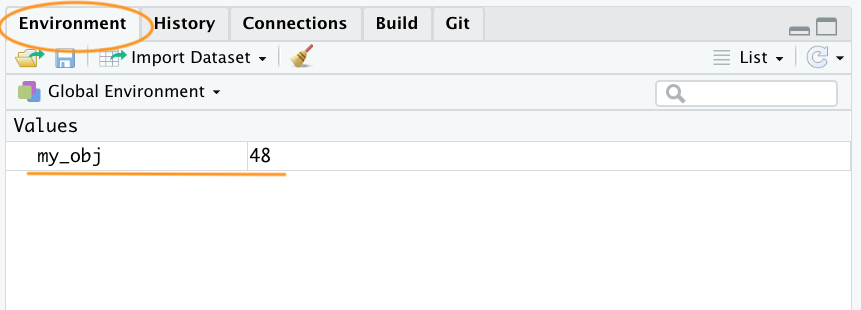
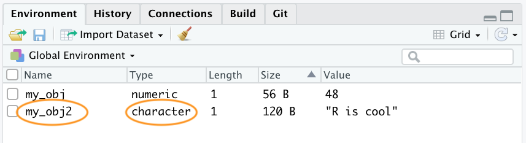

2.2 Objects in R
At the heart of almost everything you will do (or ever likely to do) in R is the concept that everything in R is an object. These objects can be almost anything, from a single number or character string (like a word) to highly complex structures like the output of a plot, a summary of your statistical analysis or a set of R commands that perform a specific task. Understanding how you create objects and assign values to objects is key to understanding R.
2.2.1 Creating objects
To create an object we simply give the object a name. We can then assign a value to this object using the assignment operator <- (sometimes called the gets operator). The assignment operator is a composite symbol comprised of a ‘less than’ symbol < and a hyphen - .
In the code above, we created an object called my_obj and assigned it a value of the number 48 using the assignment operator (in our head we always read this as ‘my_obj gets 48’). You can also use = instead of <- to assign values but this is considered bad practice and we would discourage you from using this notation.
To view the value of the object you simply type the name of the object
Now that we’ve created this object, R knows all about it and will keep track of it during this current R session. All of the objects you create will be stored in the current workspace and you can view all the objects in your workspace in RStudio by clicking on the ‘Environment’ tab in the top right hand pane.

If you click on the down arrow on the ‘List’ icon in the same pane and change to ‘Grid’ view RStudio will show you a summary of the objects including the type (numeric - it’s a number), the length (only one value in this object), its ‘physical’ size and its value (48 in this case).

There are many different types of values that you can assign to an object. For example
Here we have created an object called my_obj2 and assigned it a value of R is cool which is a character string. Notice that we have enclosed the string in quotes. If you forget to use the quotes you will receive an error message
Our workspace now contains both objects we’ve created so far with my_obj2 listed as type character.

To change the value of an existing object we simple reassign a new value to it. For example, to change the value of my_obj2 from "R is cool" to the number 1024
Notice that the Type has changed to numeric and the value has changed to 1024 in the workspace

Once we have created a few objects, we can do stuff with our objects. For example, the following code creates a new object my_obj3 and assigns it the value of my_obj added to my_obj2 which is 1072 (48 + 1024 = 1072).
Notice that to display the value of my_obj3 we also need to write the object’s name. The above code works because the values of both my_obj and my_obj2 are numeric (i.e. a number). If you try to do this with objects with character values (character class) you will receive an error
char_obj <- "hello"
char_obj2 <- "world!"
char_obj3 <- char_obj + char_obj2
Error in char_obj + char_obj2 : non-numeric argument to binary operatorThe error message is essentially telling you that either one or both of the objects char_obj and char_obj2 is not a number and therefore cannot be added together.
When you first start learning R, dealing with errors and warnings can be frustrating as they’re often difficult to understand (what’s an argument? what’s a binary operator?). One way to find out more information about a particular error is to Google a generalised version of the error message. For the above error try Googling ‘non-numeric argument to binary operator error + r’ or even ‘common r error messages’.
Another error message that you’ll get quite alot when you first start using R is Error: object 'XXX' not found. As an example, take a look at the code below
R returns an error message because we haven’t created (defined) the object no_obj yet. You should also realise that because the code returned an error message the object my_obj4 has not been created.
2.2.2 Naming objects
Naming your objects is one of the most difficult things you will do in R (honestly - we’re serious). Ideally your object names should be kept both short and informative which is not always easy. If you need to create objects with multiple words in their name then use either an underscore or a dot between words or capitalise the different words. We prefer the underscore format (called snake case)
There are also a few limitations when it come to giving objects names. An object name cannot start with a number or a dot followed by a number (i.e. 2my_variable or .2my_variable). You should also avoid using non-alphanumeric characters in your object names (i.e. &, ^, /, ! etc). In addition, make sure you don’t name your objects with reserved words (i.e. TRUE, NA) and it’s never a good idea to give your object the same name as a built-in function. One that crops up more times than we can remember is